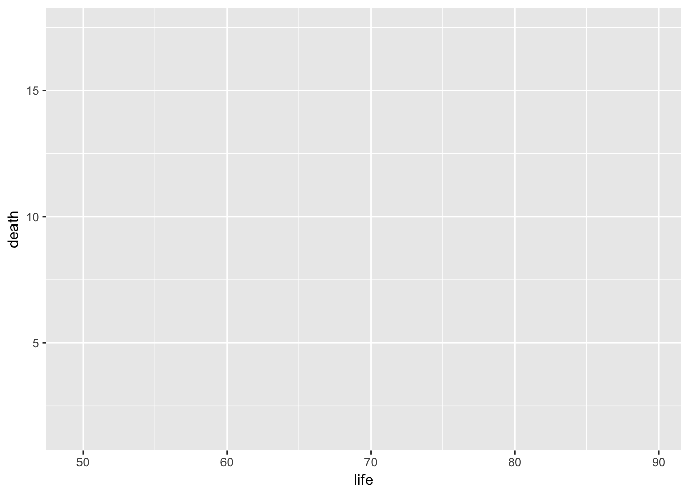

data(CountryData, package = "DataComputing")
library("ggplot2")
library("dplyr")In previous exercises, you used a formula-based interface to the ggplot2 system for graphics. That formula-based interface is intended to be easy for getting started with making simple graphics. In these exercises, you’ll practice with the ggplot interface itself.
The ggplot() function is used to define a the graphics frame. The frame it makes is blank, ready to have additional layers of glyphs added to it. The typical arguments to ggplot() are:
ggplot().aes() statement which constructs the mapping from variables in the data table to the x and y aesthetics, that is, the frame itself.The graphic shows a (blank) frame constructed by ggplot(). (We’ll add layers to this blank frame in the exercises that follow.)

# Provide access to CountryData
data(CountryData, package = "DataComputing")
# Attach the ggplot2 package
library("ggplot2")
# Fill in the blanks ...
CountryData %>%
ggplot(aes(x = ___, y = ___))As you can see, life is being mapped to the x aesthetic, death to the y aesthetic. It will seem a bit odd at first, but remember to use aes() as a function, given as an argument to ggplot(), and map the aesthetics by giving appropriate arguments to aes().
data(CountryData, package = "DataComputing")
library("ggplot2")
CountryData %>% ggplot(aes(x = life, y = death))# put pre-evaluation checking here. This can be blank, in which case
# the code will be checked by the interpreter with the usual R error messages
# shown in the even of a problem.
check_blanks(USER_CODE)set_success_message("Good job!") # change as you like
test_1 <- find_call("aes(x = life, y = whatever)",
message = "map `life` to the x axis.")
test_2 <- find_call("aes(x = whatever, y = death)",
message = "map `death to the y axis")
USER_CODE %>% test_1 %>% test_2